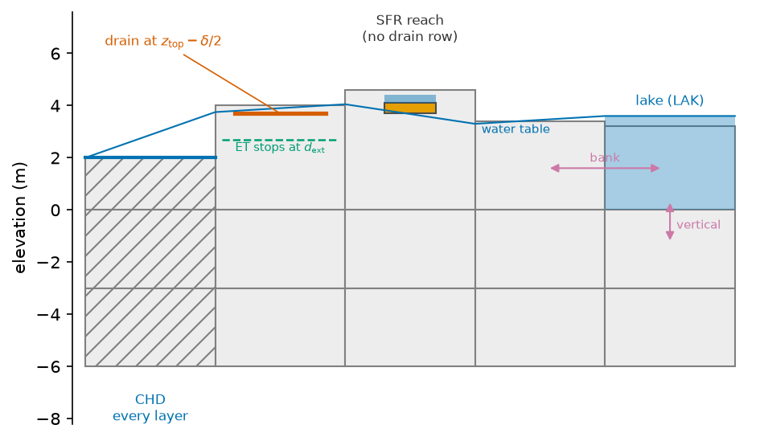

How water leaves the aquifer#
Water enters the saturated zone as recharge and leaves it through a few exits. Each exit is a boundary package of the solver: a drain where the water table reaches the ground, a fixed head at the sea, a stream that routes what it receives, a lake that stores it. The laws are those of MODFLOW. These pages give the way HydroModPy builds each exit, and how the cells where the water table reaches the surface become a simulated network. The keys of a routed network and of a lake are in [flow.sinks_sources.sfr] and [flow.sinks_sources.lakes].
Note
Scope. MODFLOW 6 builds every exit below. MODFLOW-NWT builds the drains, the
sea, the side heads and the evapotranspiration package, and no stream, lake or
water mover: a file that lists "sfr", "lake" or "reservoir" in
flow.active_bc with another solver in solver.backend is refused
when it is read. The Boussinesq solver has its own surface exchange, on
Boussinesq theory.
Notation of this page
Heads and elevations are in metres above the datum. A flux through a cell is in m³/s, a flux per unit of area in m/s. Every symbol of the site is on Notation.
Symbol |
Meaning |
Unit |
Set by |
|---|---|---|---|
\(\Phi_{n,p}\) |
flow into cell \(n\) from the stress package \(p\), positive into the aquifer |
m³/s |
|
\(n, m\) |
cell indices; \(\mathcal{N}(n)\) is the set of cells that share a face with \(n\) |
the grid, The mesh |
The exits in one table#
Exit |
Law |
MODFLOW 6 |
MODFLOW-NWT |
Switched on by |
Page |
|---|---|---|---|---|---|
Drain at the ground surface |
one-sided, head dependent |
DRN |
DRN |
|
|
Evapotranspiration from the water table |
linear in depth |
EVTA |
EVT |
|
|
Sea |
fixed head |
CHD |
BAS and CHD |
|
|
River head, lateral heads |
fixed head |
CHD |
lateral heads only |
|
|
Lake or reservoir |
storage, head dependent bed and banks |
LAK |
none |
|
|
Stream network |
routed flow, head dependent streambed |
SFR |
none |
|
|
Transfer between exits |
a rule on a provider flow |
MVR |
none |
a mover key of an exit |
Wells are a prescribed flux and not an exit. Recharge is not an exit either, but the evapotranspiration is drawn by an exit package, so both are on Drains and evapotranspiration at the top of the model.

Fig. 49 One cross-section, five columns, each with the exit the build gives it. A fixed head holds every layer of its column. A drain sits at the top of its cell, or half a band lower. A reach replaces the drain of its cell and keeps its bed inside the cell. A lake makes its top layer inactive and exchanges with the cells below and beside it.#
Where the water goes once a drain has released it, and why a mesh needs a routing surface of its own, is on Routing on the mesh: the descent D. Which cells count as flowing streams is on Where the water table reaches the surface.
The order the build assembles them#
The order matters, because each exit masks the others.
The lake cells are made inactive in their top layers, so that every other exit sees the aquifer without them.
The fixed heads are placed: sea, river, sides.
The descent \(D\) is built from the model top, the fixed-head cells and the lakes.
The recharge and the evapotranspiration are written, with no recharge on a lake cell.
The drains are written on every cell, minus the cells that host a reach or a lake bed.
The lake, then the stream network, then the water mover, which names the packages above.
In the code: run_pre_processing.
The budget closes#
The budget is the one of MODFLOW: each package reports its flow into the cells, \(\Phi_{n,p}\), positive into the aquifer, and the terms close against the change of storage. The solver prints the percent discrepancy of the sum, and the options that bound it are on The solvers of the aquifer. The budget terms are those of Langevin et al. [2017]. The input of each package is in the MODFLOW 6 input and output guide.
HydroModPy stores the terms as recharge, evapotranspiration, drain,
drain_to_mover, stream, lake, constant_head, well and storage. The
part of the drain handed to the mover leaves the aquifer through its own record
and enters the stream or the lake as water from the mover, so the package budgets
of SFR and LAK close the rest.
Assumptions common to every exit#
A drain acts on the top layer. A fixed head acts on every layer of its column. A reach and a lake exchange with the cells that hold them.
The recharge, the rain and the ETP are constant over a stress period.
Water routed by the mover reaches its receiver in the same period.
No overland flow is solved. A drain that is not routed discharges where it is, and the water leaves the model there. The water balance counts it, and no surface routing carries it on.
Parameters of this page#
Example 04 declares the drains alone:
flow.active_bc in step4_transient.tomlflow.active_bc Boundaries this run builds, by their canonical names: 'ocean', 'stream', 'north_side', 'south_side', 'east_side', 'west_side', 'drainage', 'lake', 'reservoir'. form list of string default [] current ["drainage"] set by step1_minimal.toml:47
In the code#
What |
Where |
|---|---|
The order of the build |
|
What a file may say about an exit |
|
See also#
The daily soil reservoir and Rain and evaporation: the forcing: the recharge and the ETP that reach the exits.
Downslope distance between two networks: how a simulated network is scored against a mapped one.
The solvers of the aquifer: the stress packages each solver builds.